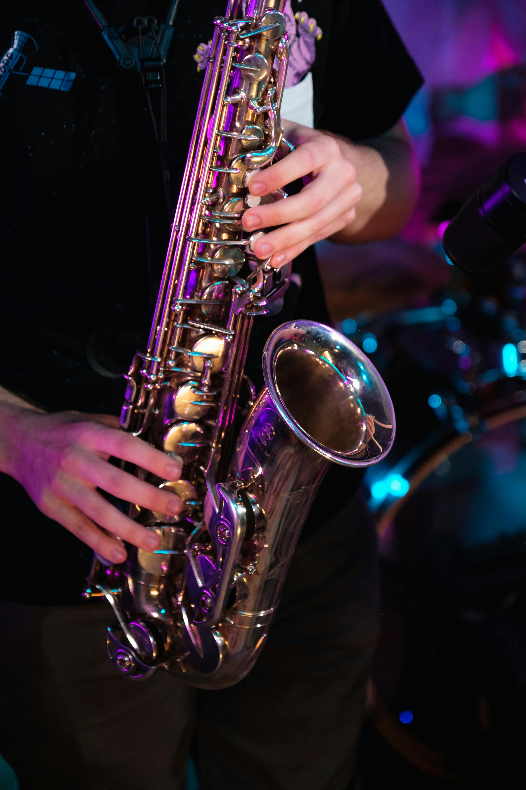

Scrum Musical
Innovación en la Pedagogía Instrumental.
Metodología
Una adaptación rigurosa y efectiva de los principios de Scrum, un marco de trabajo ágil reconocido globalmente. Nuestra metodología se centra en optimizar el proceso de aprendizaje, garantizando progreso tangible, motivación intrínseca y una profunda conexión del estudiante con su repertorio
Hemos diseñado un ciclo de aprendizaje estructurado en "Sprints", que transforman la dinámica tradicional de la clase de música en un entorno colaborativo y orientado a resultados.

1. Planificación del Sprint
Cada ciclo de aprendizaje se denomina Sprint Musical. Comienza con una evaluación diagnóstica del alumno. Luego, se selecciona una pieza musical como objetivo del Sprint. El instructor la adapta y la segmenta, definiendo objetivos de aprendizaje específicos y medibles.
2. Ejecución y Optimización
Las sesiones de clase se centran en el dominio de los segmentos de la pieza. La teoría y técnica se integran directamente en la práctica. El instructor optimiza continuamente la estrategia de aprendizaje, garantizando la eficiencia y relevancia de cada sesión.
3. Revisión y Resultados
Al final del Sprint, se realiza una revisión evaluativa donde el alumno interpreta la pieza. Esta validación formativa confirma el progreso y documenta el logro de los objetivos, proporcionando un resultado tangible.
4. Retrospectiva y Mejora Continua
Se lleva a cabo una retrospectiva para analizar el proceso y proponer mejoras. Este análisis informa la planificación del siguiente Sprint, asegurando un avance constante y personalizado hacia resultados musicales concretos.